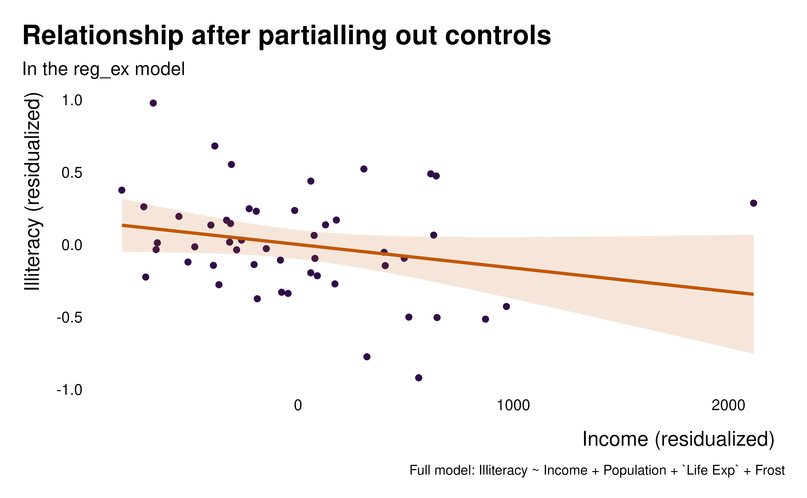
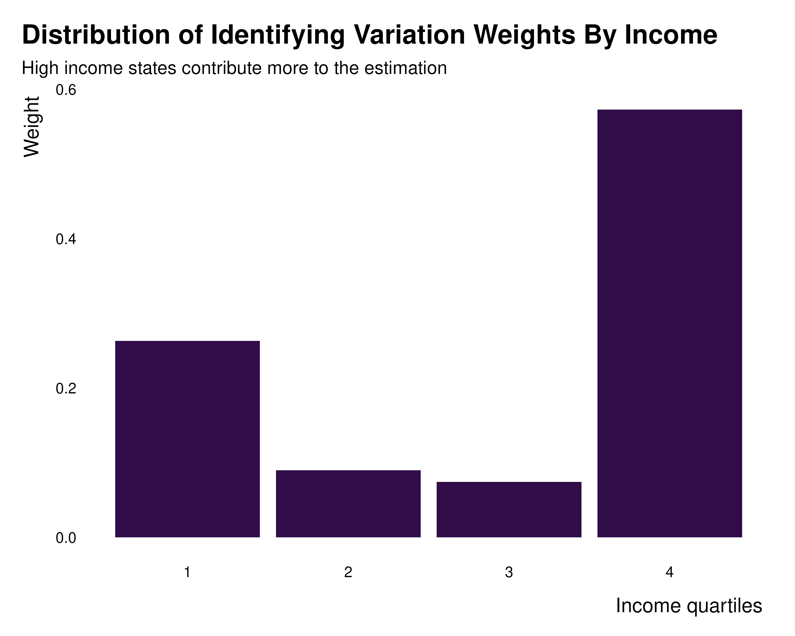

ididvar
ididvar.RmdThe present vignette quickly presents a typical workflow for analysis, using a very basic example. It also provides an overview of most of the functions available in the package.
A more thorough example, with an actual analysis and interpretation of the results, is available on the research project website.
Overview of a typical workflow
The workflow to get a better understanding of observations of groups of observations contributing to identification is relatively straightforward:
-
Visualize the relationship between x and y after
partialling out (with the
idid_viz_bivarfunction) - Compute the observation level weights and add a
weightvariable to the data set (usingidid_weights) -
Visualize the distribution of these weights (the
cumulative with
idid_viz_cumul, at the observation and group level withidid_viz_weightsoridid_viz_weights_map. To identify groups and variables for which there is a large heterogeneity in weights across groups, useidid_grouping_var). At this stage, one might already get a sense of the effective sample - Compute the set of identify contributing
observations, ie observations that we can drop without
too much altering the estimate (observations whose weight is larger than
a threshold computed with
idid_contrib_threshold). -
Visualize contributing observations, both
individual and groups (using
idid_viz_contribandidid_viz_contrib_map) - Compute and visualize the effective sample size
(with
idid_viz_drop_changeandidid_contrib_stats)
Visualize relationship
Let’s assume we have already ran the regression of interest.
data_ex <- state.x77 |>
as_tibble() |>
dplyr::mutate(
state = rownames(state.x77),
pop_quartiles = cut_number(Population, 4, labels = FALSE),
murder_quartiles = cut_number(Murder, 4, labels = FALSE),
income_quartiles = cut_number(Income, 4, labels = FALSE)
)
reg_ex <-lm(data = data_ex,
formula = Illiteracy ~ Income + Population + `Life Exp` + Frost)We first visualize the relationship between x and y (here
Illiteracy and Income) after partialling out
to understand what we are estimating and to visualize what is driving
our
idid_viz_bivar(reg_ex, "Income")
Compute weights
We can add the weights to the data.
data_ex_weights <- data_ex |>
mutate(weight = idid_weights(reg_ex, "Income"))Visualize the weights
Weights distribution
We can plot the distribution of weights using the
idid_viz_cumul function.
idid_viz_cumul(reg_ex, "Income")
That allows us to analyse the extend to which the weights are evenly distributed. A very unequal distribution should hint that some observations contribute much more to identification and that some observations may not contribute much.
We may then want to explore the distribution of weights along several
variables. Depending on the shape of the data, there might be some
obvious way to analyse it: if the data is an individual-time panel, one
may want to group it by individual and time. That can be done with, by
providing these two dimensions as the var_x and
var_y arguments.
When the data has a geographical dimension, one may want to plot a
map of the weights. The function idid_viz_weights_map
allows to do easily do that by only providing a shape file in a
sf format along with the join variable name.
states_sf <- tigris::states(
cb = TRUE, resolution = "20m", year = 2024, progress_bar = FALSE) |>
tigris::shift_geometry() |>
rename(state = NAME)
idid_viz_weights_map(reg_ex, "Income", states_sf, "state")
In addition–or instead–, it is often interesting to analyse whether
some groups have larger weights, ie contribute more, than
others. One may have a priori ideas regarding which variables
to group by. In cases when this might be less clear, one can use
idid_grouping_var to identify variables for which groups
created by each variable considered (in the grouping_vars
argument of the function) have the most between group variance in
weights, suggesting a large heterogeneity in weights across groups.
idid_grouping_var(
reg_ex, "Income",
grouping_vars = c("income_quartiles", "pop_quartiles", "murder_quartiles")
) |>
knitr::kable()| grouping_var | between_var |
|---|---|
| income_quartiles | 0.0536434 |
| pop_quartiles | 0.0352604 |
| murder_quartiles | 0.0213752 |
Here, the larges between group variance is across
income_quartiles, suggesting that some income group may
have larger weights than others. Now that dimensions along which it
makes sense to group the weights by have been identify, one can plot the
weights distribution across groups.
idid_viz_weights(reg_ex, "Income", income_quartiles) +
labs(
x = "Income quartiles",
title = "Distribution of Identifying Variation Weights By Income",
subtitle = "High income states contribute more to the estimation"
)
Through all these explorations, one can get a sense of the distribution of weights, through space or groups.
Contribution
The goal of the analysis is really to determine which observations contribute to the estimation and which do not. The approach chosen to do so here is to identify observations with low weight that can be dropped without affecting the point estimate and standard errors by more than a given proportion.
idid_viz_drop_change(
reg_ex,
"Income",
threshold_change = 0.05, #position of the dotted line
search_end = 0.4
)
This function just loops over the idid_drop_change
function which, for a given proportion of observations dropped, computes
a variation of the point estimate and standard errors of the coefficient
of interest when dropping low weight observations.
Using the idid_contrib_threshold one can thus identify a
weight threshold below which removing observations does not change the
point estimate or the standard error of the estimate of interest by more
than a given proportion.
We can thus define an effective sample whose weights are below the
aforementioned threshold. We can then use the
idid_contrib_stats function to compute quick descriptive
statistics on this effective sample:
idid_contrib_stats(reg_ex, "Income")
#> Searching for the contribution threshold
#> n_initial n_nominal n_effective prop_effective
#> 1 50 50 43 0.86The ididvar package also provides function to quickly
explore which observations are part of this effective sample.
idid_viz_contrib(reg_ex, "Income", income_quartiles)
#> Searching for the contribution threshold
idid_viz_contrib_map(reg_ex, "Income", states_sf, "state")
#> Searching for the contribution thresholdprovides a discussion and code to customize these graphs.